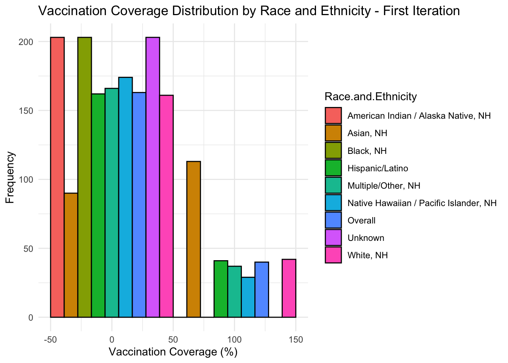
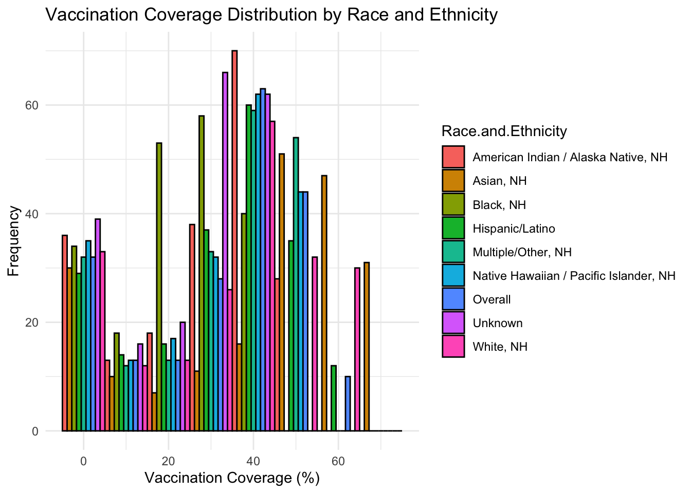
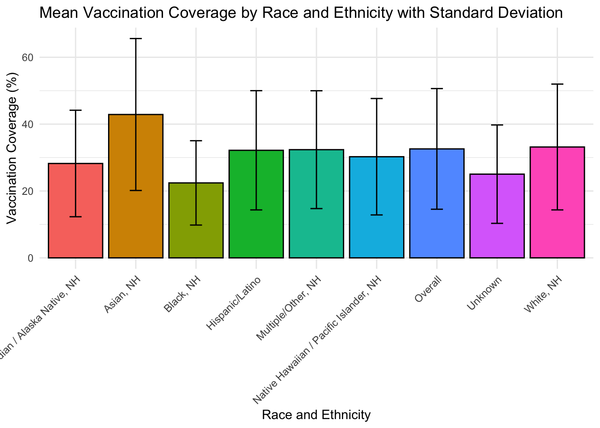
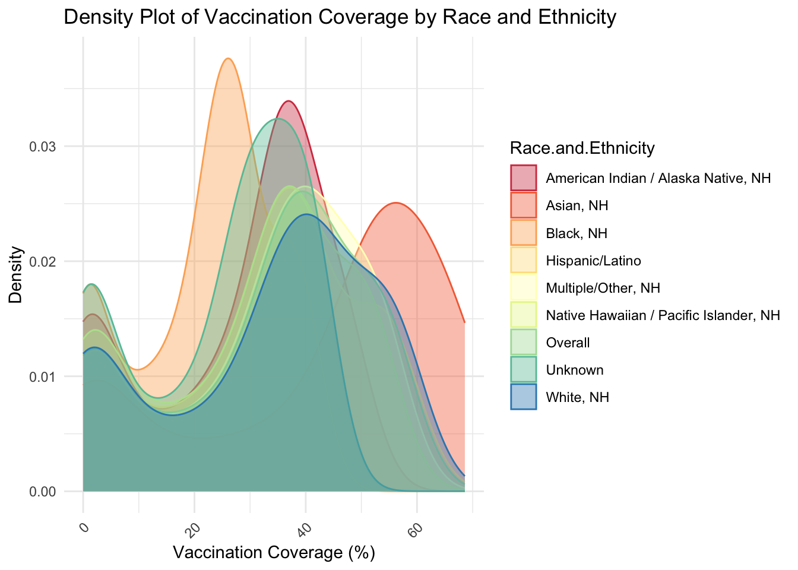
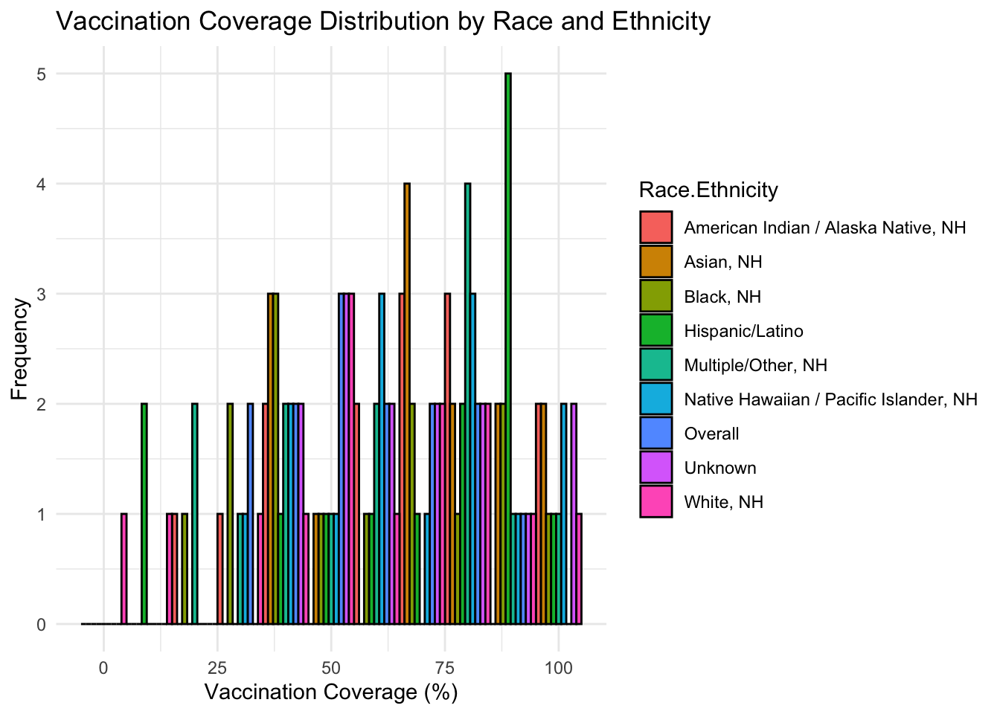
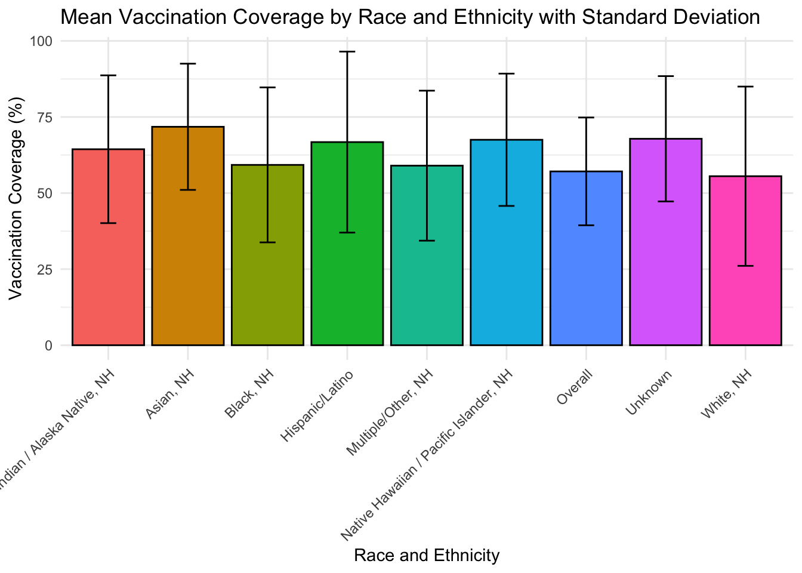

The following objects are masked from 'package:stats':
filter, lag
The following objects are masked from 'package:base':
intersect, setdiff, setequal, union
library(here) # Load the 'here' package
here() starts at /Users/hopegrismercomputer/Desktop/MADA-course/hopegrismer-MADA-portfolio
# Load the dataset using here::here() for the file pathdata <-read.csv(here("cdcdata-exercise", "Weekly_Influenza_Vaccination_Coverage_Among_Pregnant_Women_18-49_Years__by_Race_and_Ethnicity_20250205.csv"))
# Visualize vaccination coverage by race and ethnicitybarplot1iteration =ggplot(data, aes(x = Percent, fill = Race.and.Ethnicity)) +geom_histogram(binwidth =100, color ="black", position ="dodge") +labs(title ="Vaccination Coverage Distribution by Race and Ethnicity - First Iteration",x ="Vaccination Coverage (%)",y ="Frequency") +theme_minimal()# Save first iteration of barplotfigure_file =here("cdcdata-exercise","cdcdata-exercise-tables-graphs","barplot-coverage-by-race-first-iteration.png")ggsave(filename = figure_file, plot=barplot1iteration)
Saving 7 x 5 in image
barplot1iteration

# Print first iteration of barplotprint("barplot-coverage-by-race-first-iteration.png")
# There is negative vaccination coverage (like -50%) appearing on histogram which doesn’t make sense in context. # Check for any negative values in the Percent columnnegative_values <- data %>%filter(Percent <0)print(negative_values)
# Visualize vaccination coverage by race and ethnicity with updated BINSupdatedbins <-ggplot(data, aes(x = Percent, fill = Race.and.Ethnicity)) +geom_histogram(binwidth =10, color ="black", position ="dodge") +labs(title ="Vaccination Coverage Distribution by Race and Ethnicity",x ="Vaccination Coverage (%)",y ="Frequency") +theme_minimal()updatedbins

#### ------- Making the Distributions ----- #### Summarize vaccination coverage by race and ethnicitydata_summary <- data %>%group_by(Race.and.Ethnicity) %>%summarize(avg_vaccination_coverage =mean(Percent, na.rm =TRUE))# View the summary dataprint(data_summary)
# Boxplot of vaccination coverage by race and ethnicityboxplot1 =ggplot(data, aes(x = Race.and.Ethnicity, y = Percent, fill = Race.and.Ethnicity)) +geom_boxplot() +labs(title ="Vaccination Coverage by Race and Ethnicity",x ="Race and Ethnicity",y ="Vaccination Coverage (%)") +theme_minimal() +theme(axis.text.x =element_text(angle =45, hjust =1)) # Rotate x labels for better readability +theme(panel.background =element_rect(fill ="white"), # White background for the plot panelplot.background =element_rect(fill ="white") # White background for the overall plot)
# Summarize the data by Race and Ethnicity to calculate the mean and standard deviationdata_summary <- data %>%group_by(Race.and.Ethnicity) %>%summarize(avg_vaccination_coverage =mean(Percent, na.rm =TRUE),sd_vaccination_coverage =sd(Percent, na.rm =TRUE) )# View the summary dataprint(data_summary)
# Load necessary librarieslibrary(ggplot2)# Create a bar plot showing the mean vaccination coverage with standard deviation as error barsbarplot1 =ggplot(data_summary, aes(x = Race.and.Ethnicity, y = avg_vaccination_coverage, fill = Race.and.Ethnicity)) +geom_bar(stat ="identity", color ="black", show.legend =FALSE) +# Bar plotgeom_errorbar(aes(ymin = avg_vaccination_coverage - sd_vaccination_coverage, ymax = avg_vaccination_coverage + sd_vaccination_coverage), width =0.2) +# Add error bars for SDlabs(title ="Mean Vaccination Coverage by Race and Ethnicity with Standard Deviation",x ="Race and Ethnicity",y ="Vaccination Coverage (%)") +theme_minimal() +theme(axis.text.x =element_text(angle =45, hjust =1)) # Rotate x-axis labels for readabilitybarplot1

#Save barplot1 showing the mean vaccination coverage with sd error barsfigure_file =here("cdcdata-exercise","cdcdata-exercise-tables-graphs","barplot-meanwithsd-by-race.png")ggsave(filename = figure_file, plot=barplot1)
Saving 7 x 5 in image
#### To visualize the distribution of vaccination coverage (like a bell curve or a smooth curve) for each race/ethnicity group# Load necessary librarieslibrary(ggplot2)library(dplyr)# Create a density plot for vaccination coverage by race/ethnicitydensityplot1 =ggplot(data, aes(x = Percent, fill = Race.and.Ethnicity, color = Race.and.Ethnicity)) +geom_density(alpha =0.4) +# alpha for transparencylabs(title ="Density Plot of Vaccination Coverage by Race and Ethnicity",x ="Vaccination Coverage (%)",y ="Density") +theme_minimal() +theme(axis.text.x =element_text(angle =45, hjust =1)) +# Rotate x labels for readabilityscale_fill_brewer(palette ="Spectral") +# Custom color palettescale_color_brewer(palette ="Spectral") # Custom color palette for linesdensityplot1

#Save density plot for vaccination coverage by race/ethnicityfigure_file =here("cdcdata-exercise","cdcdata-exercise-tables-graphs","density-plot-vaxcov-by-race.png")ggsave(filename = figure_file, plot=densityplot1)
Saving 7 x 5 in image
This was added by Vincent Nguyen. Weekly Influenza Vaccination Coverage, Pregnant Women 18-49 Years Old by Race and Ethnicity
Weekly influenza vaccination coverage estimates for pregnant women 18–49 years are based on electronic health record (EHR) data from the Vaccine Safety Datalink (VSD) (https://www.cdc.gov/vaccine-safety-systems/vsd/), a collaboration between CDC’s Immunization Safety Office and multiple integrated health care organizations.
The downloaded binary packages are in
/var/folders/29/tsfhn2w952x9r8f27_hpzq900000gn/T//Rtmp08b7wl/downloaded_packages
First, I visualized the vaccination coverage data using race and ethnicity as indicators/variables.
Saving 7 x 5 in image
In my first iteration of this graph, however, there was negative vaccination coverage (like -50%) appearing on histogram. This representation did not which doesn’t make sense in context. I looked for outliers in the data or blanks and found none. I determined the cause of the misrepresentation was the BIN size. So, I adjusted the BINS to properly display the data.
Next, I summarized vaccination coverage by race and ethnicity in table form before generating a corresponding boxplot of vaccination coverage by race and ethnicity. This boxplot showed some interesting trends and the general variation/range within each group.
I also create a bar plot showing the mean vaccination coverage with standard deviation as error bars. Similar to the other bar plot, this displays the ranges and variation within each group vaccine coveraage. However, this graphic specifically includes each groups’ mean and standard deviation (error bars).
Saving 7 x 5 in image
Finally, to visualize the distribution of vaccination coverage (like a bell curve or a smooth curve) for each race/ethnicity group, I created a density plot for vaccination coverage by race/ethnicity. This was my favorite graphic of this exercise. It shows very explicitly where vaccine coverage for the majority of each group for the majority of the weeks recorded is falling. Such a graphic shows unfortunate trends such as the high density of American Indian/Native American vaccine coverage data plots falling in the 20-25% coverage range.
Saving 7 x 5 in image
This portion of the assignment was contributed by Vincent Nguyen.
For this section, I had trouble replicating the exact vaccination coverage over time; I did ask ChatGPT for help on this but it became complicated really fast so I chose to start the data set in November to ensure the coverage made somewhat logical sense. There were tons of prompts as I was trying to create logisic growth curves and everything but I decided to just make it more simple. I asked ChatGPT to help introduce some noise and helped ensure the vaccination coverage increased over time according to the set mean and SD. The issue arises because the mean and standard deviation do not capture the actual spread of vaccination coverage, which increased over time rather than being randomly distributed.
# First, need to understand distribution of race/ethcnitiy to replicate the denominatordenom_stats <- data %>%group_by(Race.and.Ethnicity) %>%summarise(mean_denominator =mean(Denominator, na.rm =TRUE),sd_denominator =sd(Denominator, na.rm =TRUE) )# Define race/ethnicity groupsrace_ethnicity <-c("American Indian / Alaska Native, NH", "Asian, NH", "Black, NH", "Hispanic/Latino", "Multiple/Other, NH", "Native Hawaiian / Pacific Islander, NH", "Overall", "Unknown", "White, NH")# Define the summary stats for mean and SD of Denominator (based on denom_stats)summary_stats_denominator <-data.frame(Race.Ethnicity =c("American Indian / Alaska Native, NH", "Asian, NH", "Black, NH", "Hispanic/Latino", "Multiple/Other, NH", "Native Hawaiian / Pacific Islander, NH", "Overall", "Unknown", "White, NH" ),mean_denominator =c(403.0788, 23625.3990, 15415.2266, 54375.3350, 7427.5222, 800.7389, 164107.4581, 11195.0443, 50865.1133),sd_denominator =c(86.13829, 4898.93053, 3671.98063, 11469.75194, 1540.13275, 169.41929, 34907.95658, 2441.36489, 11256.72535))# Define the summary stats for vaccination coverage (avg and sd) (based on data_summary)summary_stats_vaccination <-data.frame(Race.Ethnicity =c("American Indian / Alaska Native, NH", "Asian, NH", "Black, NH", "Hispanic/Latino", "Multiple/Other, NH", "Native Hawaiian / Pacific Islander, NH", "Overall", "Unknown", "White, NH" ),avg_vaccination_coverage =c(28.22759, 42.87931, 22.42167, 32.17389, 32.35961, 30.25074, 32.58966, 25.03744, 33.15911),sd_vaccination_coverage =c(15.92859, 22.72488, 12.61283, 17.83555, 17.62178, 17.41049, 18.04427, 14.71800, 18.81666))# First, create date range from late November to early Februaryflu_season_dates <-seq(as.Date("2023-11-01"), as.Date("2024-02-01"), by ="week")# Create an empty data frame for synthetic datan_observations <-length(flu_season_dates) *length(race_ethnicity)synthetic_data <-data.frame(Vaccination.Coverage =numeric(n_observations), Flu.Season =as.Date(rep(NA, n_observations)), Denominator =numeric(n_observations), Race.Ethnicity =character(n_observations) )# Populate the synthetic data frame with combinations of flu season dates and race/ethnicityrow_index <-1# Set seed for reproducibilityset.seed(123) for (week_date in flu_season_dates) {for (race in race_ethnicity) {# Get the mean and SD for the current race/ethnicity for Denominator race_stats_denominator <- summary_stats_denominator[summary_stats_denominator$Race.Ethnicity == race, ]# Generate a random population count from the normal distribution for Denominator denominator_value <-max(0, rnorm(1, race_stats_denominator$mean_denominator, race_stats_denominator$sd_denominator))# Get the mean and SD for the current race/ethnicity for Vaccination Coverage race_stats_vaccination <- summary_stats_vaccination[summary_stats_vaccination$Race.Ethnicity == race, ]# Calculate the week number (starting from 1 for the first week in the narrowed date range) week_number <-which(flu_season_dates == week_date)# Gradual increase for vaccination coverage across weeks# Calculate the incremental change based on the week number vaccination_coverage_growth <- race_stats_vaccination$avg_vaccination_coverage + (week_number -1) * (100- race_stats_vaccination$avg_vaccination_coverage) / (length(flu_season_dates) -1)# Add noise based on the mean and standard deviation for vaccination coverage vaccination_coverage <-rnorm(1, vaccination_coverage_growth, race_stats_vaccination$sd_vaccination_coverage)# Ensure vaccination coverage stays between 0% and 100% vaccination_coverage <-min(max(0, vaccination_coverage), 100)# Assign values to the synthetic data frame synthetic_data[row_index, "Flu.Season"] <- week_date synthetic_data[row_index, "Race.Ethnicity"] <- race synthetic_data[row_index, "Denominator"] <- denominator_value synthetic_data[row_index, "Vaccination.Coverage"] <- vaccination_coverage row_index <- row_index +1 }}# View the first few rows of the synthetic data framehead(synthetic_data)
For this section, I chose to mimic Hope’s original graphs and just change the inputs to use the synthetic data set instead. Some graphs do look reasonably similar but are skewed more positively because of the inclusion of certain dates only.
# Visualize vaccination coverage by race and ethnicity with updated BINSgraph2 =ggplot(synthetic_data, aes(x = Vaccination.Coverage, fill = Race.Ethnicity)) +geom_histogram(binwidth =10, color ="black", position ="dodge") +labs(title ="Vaccination Coverage Distribution by Race and Ethnicity",x ="Vaccination Coverage (%)",y ="Frequency") +theme_minimal()#Display print(graph2)

# Create a bar plot showing the mean vaccination coverage with standard deviation as error barsbarplot2 =ggplot(data_synthetic_summary, aes(x = Race.Ethnicity, y = avg_vaccination_coverage, fill = Race.Ethnicity)) +geom_bar(stat ="identity", color ="black", show.legend =FALSE) +geom_errorbar(aes(ymin = avg_vaccination_coverage - sd_vaccination_coverage, ymax = avg_vaccination_coverage + sd_vaccination_coverage), width =0.2) +labs(title ="Mean Vaccination Coverage by Race and Ethnicity with Standard Deviation",x ="Race and Ethnicity",y ="Vaccination Coverage (%)") +theme_minimal() +theme(axis.text.x =element_text(angle =45, hjust =1)) #Displayprint(barplot2)

# Create graph like how it was for the real datadensityplot2 =ggplot(synthetic_data, aes(x = Vaccination.Coverage, fill = Race.Ethnicity, color = Race.Ethnicity)) +geom_density(alpha =0.4) +labs(title ="Density Plot of Vaccination Coverage by Race and Ethnicity (Synthetic Data)",x ="Vaccination Coverage (%)",y ="Density") +theme_minimal() +theme(axis.text.x =element_text(angle =45, hjust =1)) +scale_fill_brewer(palette ="Spectral") +scale_color_brewer(palette ="Spectral") #Display print(densityplot2)